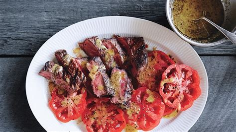

Grilled Flatiron Steak with Toasted Spice Vinaigrette
Let the steak rest top of the tomatoes. Their juices will commingle and make
the dressing that much better.

Ingredients:
- 1 1/2 pounds flatiron or skirt steak, cut into 4 pieces
- 1 tablespoon olive oil
- Kosher salt, freshly ground pepper
- Toasted Spice Vinagrette
- beefsteak or heirloom tomatoes, sliced 1/2" thick
Preparation:
- Prepare grill for medium-high heat. Rub steak with oil; season with salt
and pepper. Grill about 4 minutes per side for medium rare. Let cool 5
minutes before slicing against the grain.
- Serve steak on top of tomatoes wiht vinaigrette spooned over.